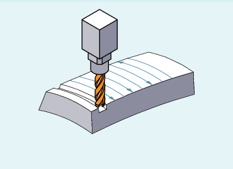

Für diese Art des 3D-Fräsens wird die zeilenweise Beschreibung der 3D-Bahnen auf der Werkstückoberfläche benötigt. Die Berechnungen werden unter Berücksichtigung der Werkzeugform und Werkzeugabmessungen üblicherweise im CAM durchgeführt. Der Postprozessor schreibt in das Teileprogramm – neben den NC-Sätzen – die Werkzeugorientierungen (bei aktiver 5-Achstransformation) und den G-Befehl für die gewünschte 3D-Werkzeugkorrektur. Hierdurch hat der Maschinenbediener die Möglichkeit – abweichend von dem für die Berechnung der NC-Bahnen verwendeten Werkzeug – geringfügig kleinere Werkzeuge einzusetzen.
Stirnfräsen
Das Anfahrverhalten ist bei den 3D-Varianten der Werkzeugradiuskorrektur immer NORM.
Außenecken werden beim Stirnfräsen als Kreise mit dem Radius 0 behandelt, wobei die Kreisebene von der Endtangente des ersten und der Starttangente des zweiten Satzes aufgespannt wird. Damit ist auch eine Orientierungsänderung beim Satzübergang möglich. An einer Außenecke wird somit immer ein Kreis als Konturelement eingefügt. Das Schnittpunktverfahren steht beim Stirnfräsen nicht zur Verfügung.
Über die G-Befehle ORIC und ORID kann festgelegt werden, ob Orientierungsänderungen, die zwischen den beiden die Ecke bildenden Verfahrsätzen programmiert wurden, vor Beginn des eingefügten Kreissatzes (ORID) oder gleichzeitig mit diesem (ORIC) ausgeführt werden.
Die auf ein Differenzwerkzeug bezogene 3D-Werkzeugradiuskorrektur wird durch den Befehl CUT3DFD angewählt. Sie ist anzuwenden, wenn sich die programmierte Kontur auf die Mittelpunktsbahn eines Normwerkzeugs bezieht und die Bearbeitung mit einem davon abweichenden Werkzeug erfolgt. Bei der Berechnung der 3D-Werkzeugradiuskorrektur werden dann nur der Verschleißwert des Radius des aktiven Werkzeugs ($TC_DP15) und die gegebenenfalls programmierten Werkzeugkorrekturoffsets OFFN und TOFFR/TOFFLR eingerechnet. Der Grundradius ($TC_DP6) des aktiven Werkzeugs wird nicht eingerechnet.
Das 3D-Stirnfräsen mit CUT3DFD ist nur in Kombination mit der "Glättung der Flächennormalen beim 3D-Stirnfräsen" möglich. Diese wird aktiviert über den Aufruf der lizenzpflichtigen Funktion "Top Surface" mittels CYCLE832(...). Die Aktivierung muss vor dem Einschalten der Werkzeugkorrektur mit G41/G42 erfolgen, und zwar nicht direkt vor dem Werkzeugeingriff, sondern schon eine Bahnweglänge vorher, die etwa dem 1000-fachen der Konturtoleranz entspricht (z. B. 1000 x 0,01 mm = 10 mm). Die Deaktivierung muss in umgekehrter Reihenfolge ablaufen: erst Ausschalten der Werkzeugkorrektur mit G40, dann, nach einer Bahnweglänge, die etwa dem 1000-fachen der Konturtoleranz entspricht, die Deaktivierung durch z. B. CUT2D (o. ä.).
Um die "Glättung der Flächennormalen beim 3D-Stirnfräsen" anwenden zu können, ist zusätzlich die Freischaltung der Funktion "Interpolation der Flächennormalen über Polynome" erforderlich:
MD28291 $MC_MM_SMOOTH_SURFACE_NORMALS = TRUE
| Hinweis |
Für das 3D-Stirnfräsen mit CUT3DFD in Kombination mit "Top Surface" sind die Einstellempfehlungen bezüglich "Top Surface" zu beachten! Zur Überprüfung der eingestellten Daten steht über das SIOS-Portal spezielles Prüfprogramm zur Verfügung. → |
Siehe auch:
CYCLE832 - High Speed Settings